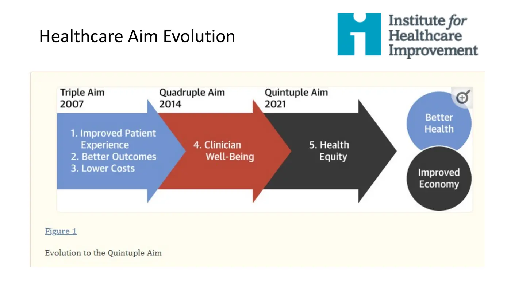
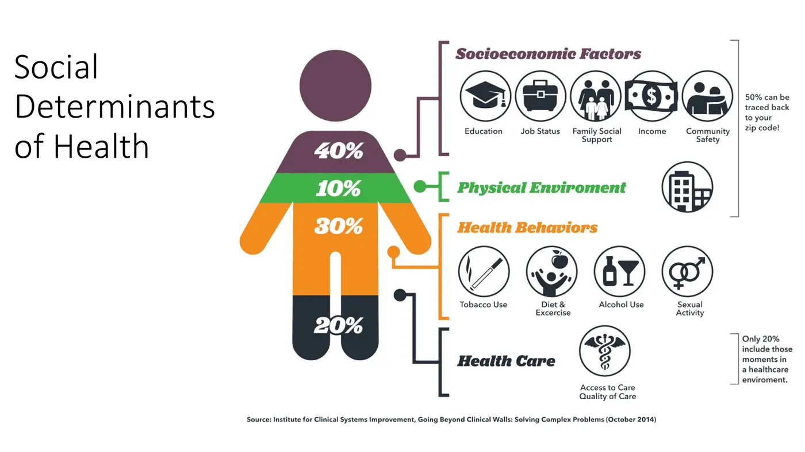
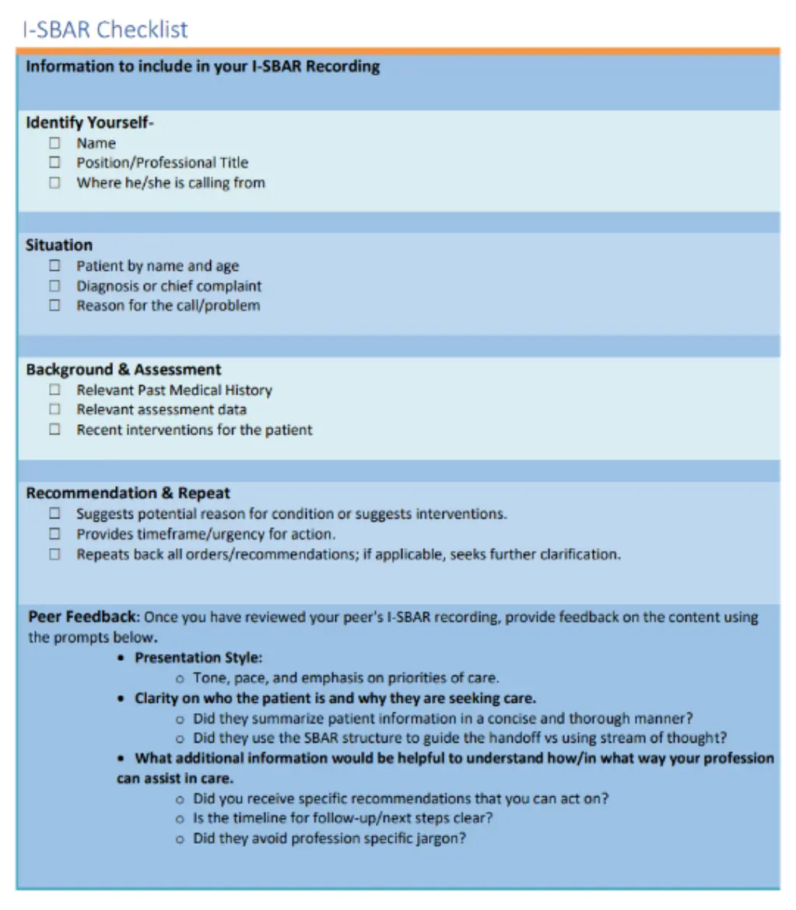
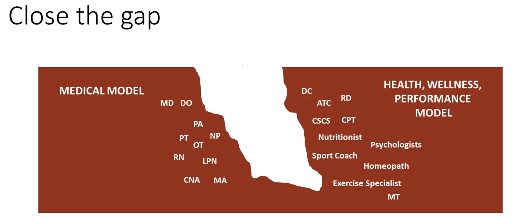
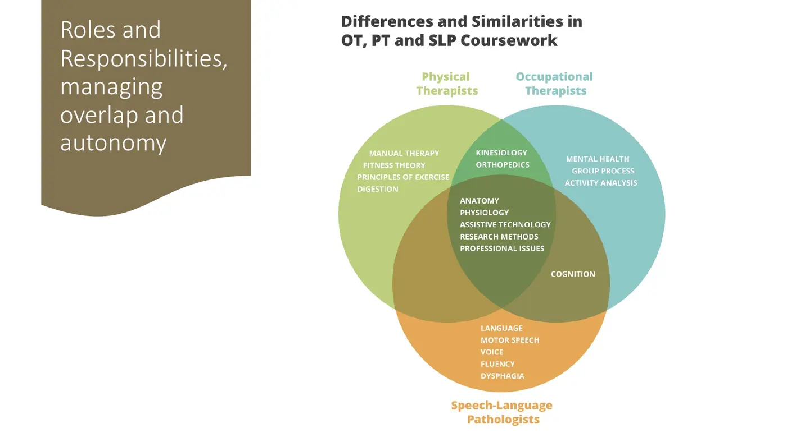

Courses › Professional Competencies I › Module 4
Professional Competencies I · 6811
Module 4 — The PT on the Interprofessional Healthcare Team
Topic 4.1: Interprofessional Healthcare Team — Quintuple Aim • IPE Definitions & Practice • Communication Strategies • The Gap & Billing Strategies
📖 How to Use These Notes
- Best used with the lecture playing — keep these open, follow along, and add your own notes as you watch
- Lecture banners mark the start of each topic and run in the same order as the videos
- 🎙 Callouts = direct insights from the instructor's transcript
- ★ Tips = exam-relevant content or things the instructor told you to prepare
- Figures are taken directly from the module's slide decks
- Each topic ends with its own Quick-Reference Glossary
- Written from last year's recordings — if a lecture has been re-recorded or resequenced, Canvas wins
- Four lecture videos by Dr. Shelene Thomas — watch them in your own Canvas module
- Module assignment: PhysioU MacroSIM — Neurologic Rehabilitation Interprofessional Education
- The module's framing scenario: morning rounds recommend discharging Room 209, but YOU saw the patient fall in the therapy gym yesterday. This module gives you the words for that moment
LECTURE 1
The Quintuple Aim — Why Collaboration Became Non-Negotiable
1. The Cost-Quality Problem
- The US spends more per person on healthcare than any country on earth (OECD spending chart; India spends the least), and average inpatient-stay costs climbed straight through the 2000s. The quality return: the US ranks 32nd in life expectancy — Japan leads (the most centenarians), then Switzerland, Singapore, Australia, Spain. Plot cost against life expectancy and the US backslides: shorter lives despite the highest spend. Cost and quality are NOT a one-to-one relationship.
2. The Third Leading Cause of Death
- What kills Americans: 1) heart disease, 2) cancer, 3) medical error — not a disease process but iatrogenic harm from well-intended providers: mistakes, miscommunication, conflict, bullying (COVID temporarily displaced it; the ranking has returned). The IOM's To Err Is Human (book + film) launched the tracking.
| Error landscape | What to know |
|---|---|
| 10 “never events” | Account for roughly two-thirds of total error cost. PT-relevant three: pressure ulcers (you'll monitor skin alongside nursing), post-operative infection (you're at the bedside to discover + alert), adverse drug/medication interactions (you'll know pharmacology — speak up to prescribers) |
| 7 crucial conversations (AACN, “Silence Kills”) | The conversation failures behind errors: broken rules · mistakes · lack of support · incompetence · poor teamwork · disrespect · micromanagement |
| DPT students see it too | Struessel et al.: DPT students on clinical rotations observe patient-safety errors across patient, staff, and team factors — you'll be in that system soon |
3. Triple → Quadruple → Quintuple

- Triple Aim (IHI, 2007): improved patient experience + better outcomes + lower costs. Quadruple (2014): + clinician well-being — provider burnout (stress, dissatisfaction, attrition) threatens the whole system. Quintuple (2021, post-COVID): + health equity, after the pandemic exposed the inequity in outcomes. Using this term correctly marks you as current — and the research frontier is showing that pursuing these aims (motivational interviewing, communication skills, shared decision-making) improves outcomes, experience, provider experience, and costs.

Lecture 1 — Quick-Reference Glossary
| Term | Definition |
|---|---|
| US cost vs quality | Highest spend per person · 32nd in life expectancy |
| Death causes 1-2-3 | Heart disease · cancer · MEDICAL ERROR |
| Never events | 10 errors ≈ 2/3 of error cost; ulcers, post-op infection, drug interactions are PT territory |
| Triple/Quadruple/Quintuple | 2007 IHI / +well-being 2014 / +health equity 2021 |
| SDOH split | ~40% socioeconomic · 30% behaviors · 20% health care · 10% environment |
LECTURE 2
IPE, Collaborative Practice, and Relational Coordination
1. The Definitions (know these cold)
| Interprofessional education (IPE) | Interprofessional collaborative practice (IPCP) |
|---|---|
| Two or more professions (students, residents, health workers) learn WITH, FROM, and ABOUT each other | Multiple health workers from different backgrounds provide comprehensive services |
| Purpose: enable effective collaboration and improve health outcomes | Working WITH patients, families, caregivers, and communities |
| You + one OT counts. Sitting in the same room does NOT — you must cross-mingle | Goal: highest quality of care across settings |
| If adding a discipline doesn't benefit the patient, don't add it — this isn't kumbaya | The practice-world continuation of IPE — pre-licensure → graduate → post-licensure continuum |
2. Core Competencies
- IPEC's four: communication • roles and responsibilities • values and ethics • teams/teamwork (each with sub-competencies all providers must meet). International comparison: Canada's CIHC and the UK's CAIPE include conflict management — IPEC doesn't yet, but this course teaches conflict strategies anyway because healthcare is full of it. WHO framework: local health needs → fragmented system → IPE in education → collaborative-practice-ready workforce → strengthened system + better outcomes. You are at the education stage; clinical education is where it transforms into practice.
3. Relational Coordination — Gittell's Evidence
- Jody Hoffer Gittell (studied Southwest Airlines, then healthcare): relational coordination = shared goals + shared knowledge + mutual respect, carried by frequent, timely, accurate, problem-solving communication. Her surgical study: 9 hospitals, 893 patients (5 Boston, 2 NYC, 2 Dallas), RC quantified per discipline pair.
| Finding | Number |
|---|---|
| Strongest RC pair | PT working with PT — 4.71, the highest measured; same-discipline pairs generally relate best |
| Weakest RC pair | Physician ↔ social worker (~3.70) |
| Surgical performance | +27% with high RC (summary slide; transcript once says 31%) |
| Hospital stays | 33% shorter |
| Patient-perceived quality | +26% |
| Clinical outcome (freedom from pain) | +8% |
| Job satisfaction | +17% — and better job satisfaction feeds back roughly another 9% of surgical performance |
Lecture 2 — Quick-Reference Glossary
| Term | Definition |
|---|---|
| IPE | ≥2 professions learning with/from/about each other to improve outcomes |
| IPCP | Different backgrounds + patients/families/communities + highest quality across settings |
| IPEC four | Communication · roles/responsibilities · values/ethics · teamwork |
| Conflict management | In the Canadian + UK frameworks; taught here even though IPEC omits it |
| Relational coordination | Shared goals + shared knowledge + mutual respect (+ quality communication) |
| 4.71 | PT–PT: the strongest relational coordination Gittell measured |
LECTURE 3
Communication Strategies — TeamSTEPPS
TeamSTEPPS comes from AHRQ (the federal Agency for Healthcare Research and Quality), built decades ago to counter communication-driven harm. You won't be TeamSTEPPS-certified, but every discipline (RN, PT, PA, MD/DO) is learning the same vocabulary — which is the point: shared words for hard moments.
| Tool | When | What it is |
|---|---|---|
| Brief | BEFORE an event (pre-surgery, pre-shift in the ED) | What's going to happen; build situational awareness |
| Huddle | Mid-stream — most commonly shift change | How did the night go, how are we doing, are we okay? (You've done these without the name) |
| Debrief | AFTER the event | What went well, what didn't, what do we change next time — use it in academics and ask your CI to use it in clinic |
| ISBAR | Something CHANGED and you're handing the concern to another provider | Identify → Situation → Background → Assessment → Recommendation (see checklist below) |
| CUS | You used SBAR and you're NOT being heard | “I'm Concerned — I'm Uncomfortable — this is a Safety issue.” "Concerned" is the shared stop-word |
| DESC | Conflict with a suggestion attached | Describe the situation · Express your concern · Suggest the alternative · Consequences if we don't |

Lecture 3 — Quick-Reference Glossary
| Term | Definition |
|---|---|
| TeamSTEPPS | AHRQ's team-communication toolkit — all disciplines learn it |
| Brief / huddle / debrief | Before / during (shift change) / after |
| ISBAR | Identify · Situation · Background · Assessment · Recommendation+Repeat |
| The added I | So the listener knows your discipline and what you bring |
| CUS | Concerned · Uncomfortable · Safety issue — the escalation ladder |
| DESC | Describe · Express · Suggest · Consequences — conflict with a plan |
LECTURE 4
The Gap, Role Overlap, and Billing Strategies
1. The Gap

- Patients move out of the medical system (MD, DO, PA, NP, RN, PT in the traditional hierarchy) into health/wellness/performance care (chiropractor, athletic trainer, nutritionist, psychologist, exercise specialist, massage therapist…). The system, geography, and scope differences form a gap — and your training is designed to build horizontal integration across the continuum: reach across, discuss the patient's needs, and know how your scope covers them.
2. Who You'll Overlap With

- PT–OT is the most common co-treatment pairing (Dr. Thomas: argue if you like, the data says so). Shared center: anatomy, physiology, kinesiology/orthopedics. OTs are stronger in cognitive skills by educational standard; SLPs own language, voice, dysphagia; PT's unique strengths are movement science and manual therapy. Sports flavor: PT + athletic trainer + sport coach + strength-and-conditioning coach — tactical skill sits with the coach, advanced exercise prescription with the S&C coach; the athlete's function is the shared center.
3. Co-Treating and Billing Without Getting Burned
💵 The rules that keep you ethical AND paid
- Co-treating is allowed — but you must be UNIQUELY DIFFERENT and able to articulate why BOTH skills were needed at once
- One service billed → divide the service units, or make the unique case for your distinct skilled care
- PT and OT eval/re-eval codes are different (eval codes are tiered by complexity; untimed modality codes exist) — coordinate so you both bill uniquely
- Inpatient rehab/SNF: minute-by-minute accounting — session start/end, INDIVIDUAL vs CONCURRENT vs GROUP minutes; Medicare caps concurrent/group minutes per week and per stay (PDPM governs grouping)
- Your documentation is your defense. Make it defensible: skilled need, unique contribution, medical necessity
- Why bother: team care wins on outcomes. Pany et al. (Health Affairs, 2021; optional reading): ~20,000 patients, 2013–2018, with type 2 diabetes + hyperlipidemia + hypertension — team-based care beat solo providers on disease control for all three conditions, with or without a physician on the team.
🔗 Required + downloadable resources — Topic 4.1
Lecture 4 — Quick-Reference Glossary
| Term | Definition |
|---|---|
| The gap (Jensen) | Medical model ↔ health/wellness/performance model — reach across it |
| Horizontal integration | Collaborating across the continuum, not just up the hierarchy |
| PT–OT–SLP Venn | Most frequent collaboration; OT = cognition edge, PT = movement + manual therapy |
| Co-treat rule | Uniquely different, articulated, documented — or don't bill it |
| Individual / concurrent / group | The three minute-types Medicare counts (and caps) |
| Documentation | Your defense. Defensible, skilled, necessary |